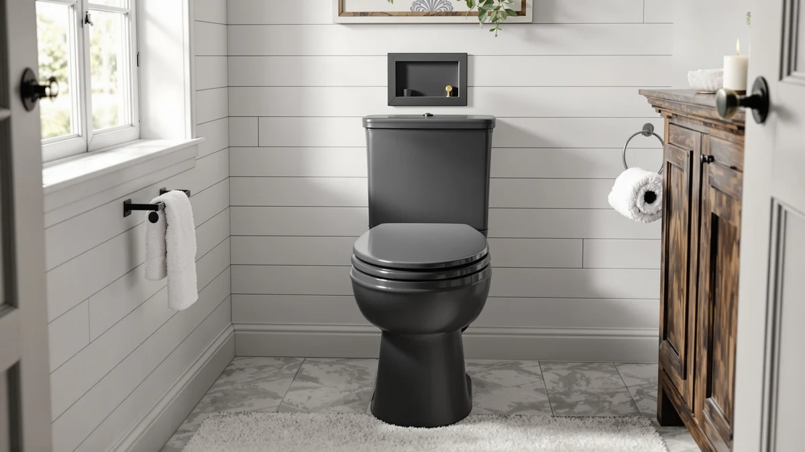

Mayfair Sculptured Rainfall Slow Close Toilet Seat Review (2026): Worth It?
Prices and picks verified as of November 2026. Independent, reader-supported reviews.


Quick Answer
This Mayfair Sculptured Rainfall Slow Close Toilet Seat review focuses on the $53.52 elongated seat and how its sculpted rainfall texture, wood seat body and soft-close hinge compare with alternatives from Kohler and Plexon. Choose it if you want a textured, soft-closing elongated seat with easy-clean hinges and don't need the added height or cushioning the alternatives below provide.
Our pick: Mayfair Sculptured Rainfall Slow Close, $53.52 Check Price on Amazon
Bottom line: our top pick is the Mayfair Sculptured Rainfall Slow Close Toilet Seat at $54.12.
Things to Know Before You Buy
- The Mayfair Sculptured Rainfall Slow Close Toilet Seat costs $53.52 and ships in the elongated shape only, so confirm your bowl shape before ordering.
- The lid uses a sculpted rainfall texture molded into white plastic, paired with a wood seat body instead of the single-material plastic used on most slow-close seats on this site.
- Mayfair documents this seat as made in the USA, a detail the Plexon alternative compared below does not publish.
- This listing does not publish a star rating or review count, so we compared it on material, price and feature claims rather than aggregate scores.
- If you need extra seat height instead of extra texture, the Kohler Hyten and Raised Toilet Seat Riser alternatives below add 3 inches and adjustable height respectively.
This Mayfair Sculptured Rainfall Slow Close Toilet Seat review compares the $53.52 elongated seat's sculpted texture, wood seat body and soft-close hinge against a raised Kohler alternative, an adjustable riser and a cushioned round seat from Plexon. Mayfair markets the seat on finish and feel, not added height. It pairs a molded rainfall texture with a wood seat body meant to outlast a single-material plastic seat. We went through its published features, current Amazon pricing and the details Mayfair lists for this ASIN to see how it actually stacks up against the Kohler, Plexon and riser alternatives covered later in this guide.
If a textured, soft-closing seat is your main goal and you have a standard elongated bowl, the Mayfair Sculptured Rainfall Slow Close Toilet Seat is the model we point to first among the four options reviewed here. At $53.52, it costs about two dollars less than the Plexon Soft Cushioned seat and roughly matches the Kohler Hyten, undercutting the Raised Toilet Seat Riser by less than two dollars, so price alone will not decide this one for most buyers. The decision comes down to what problem you are solving: texture and finish on your current seat height, or added height from a toilet seat riser like the adjustable model compared below.
Why You Should Trust Us
Ilane Tall covers bathroom hardware for Best Toilet Seats, and this Mayfair Sculptured Rainfall Slow Close Toilet Seat review followed the same process used across the site: comparing manufacturer specifications, current Amazon pricing and the feature claims Mayfair publishes for this listing, rather than running our own lab tests. We do not own a testing facility, so each claim below traces back to the published listing, current pricing or a documented spec we can point to directly. Where Mayfair does not publish a rating or review count, we say so instead of guessing, because a review that hides its sourcing is not useful to anyone comparing textured toilet seats before a purchase.
Our Research Experience
We did not install or sit on the Mayfair Sculptured Rainfall Slow Close Toilet Seat ourselves. Instead, we researched its published specifications, tracked current pricing and compared its stated features against the Kohler, Plexon and riser alternatives covered in this review. That approach lets us point out what Mayfair's own listing documents, such as the sculpted rainfall texture and wood seat body, without inventing a lived-in story we cannot back up with a source. We looked specifically at what the listing says about the soft-close hinge and easy-clean hardware, since no rating or review count is published for this ASIN, and skipped speculating about long-term durability where the documentation does not go. For this Mayfair Sculptured Rainfall Slow Close Toilet Seat review to be useful, it needs to rely on what is actually published and priced right now rather than a claim we cannot verify, and that is the standard we held this piece to throughout.
Overview & Specs

Mayfair Sculptured Rainfall Slow Close
What we like
- Sculpted rainfall texture gives the lid a dimensional look plain molded-plastic seats in this price range don't have
- Soft-close hinge lowers the lid and seat quietly instead of slamming
- Easy-clean hinges release quickly for deeper cleaning while the mounting bolts stay tight
- Made in the USA, a detail the Plexon alternative below doesn't document
Flaws but not dealbreakers
- No published star rating or review count to check before buying
- Ships in elongated shape only, so it will not fit a round bowl
| Material | Plastic / wood |
| Size | Elongated |
Mayfair builds this seat around texture and finish rather than added height or cushioning. The lid uses a sculpted rainfall pattern molded into white plastic, while the seat sits on a wood seat body for weight and rigidity instead of a lightweight single-material shell. The soft-close hinge lowers the lid and seat quietly, and Mayfair's easy-clean hinges release quickly for deeper cleaning while the mounting bolts stay tight so the seat doesn't shift or wobble. At $53.52, the elongated seat prices close to the Kohler Hyten and about two dollars under the Plexon Soft Cushioned seat covered later in this Mayfair Sculptured Rainfall Slow Close Toilet Seat review, though none of the three solve the exact same problem.
Because Mayfair does not publish a rating or review count for this listing, we compared it mainly on published features, material and price rather than aggregate scores, the same approach we take whenever a toilet seat listing omits that data. The elongated-only fit is the detail most likely to matter before you buy, since this seat will not work on a round bowl the way the Plexon alternative does. Checking current Amazon pricing before you order is worth the extra minute, since affiliate listings like this one can shift by a few dollars between the time we publish this review and the day you actually buy.
What We Liked
The clearest strength in this Mayfair Sculptured Rainfall Slow Close Toilet Seat review is the sculpted rainfall texture itself. Molding a textured pattern into the lid is a different approach than the flat, glossy finish most elongated seats in this price range use, and it's the detail that separates the Mayfair from a plain hardware-store replacement. The wood seat body is the other feature worth noting, since a seat built around a solid core tends to hold its shape better over time than a hollow single-material shell. The soft-close hinge lowers quietly on its own, and Mayfair's easy-clean hinges release quickly for deeper cleaning while the mounting bolts stay tight, which addresses the loose, wobbling seat problem buyers run into with cheaper hardware. Because Mayfair makes this seat in the USA, buyers who weigh that detail against imported alternatives like the Plexon have a documented reason to lean toward the Mayfair at a comparable price.
What Could Be Better
The most notable gap in this Mayfair Sculptured Rainfall Slow Close Toilet Seat review is the missing rating and review count on this listing, which leaves buyers without the kind of verified feedback we can point to on the Raised Toilet Seat Riser covered later in this review. The elongated-only shape is a real limitation too: if your bowl is round, this seat will not fit, and you will need to look at the Plexon Soft Cushioned alternative instead, since it ships in the round shape. Mayfair also does not publish a weight capacity figure for this listing beyond calling the hinges secure, so buyers comparing hardware details against the Kohler Hyten's documented Grip-Tight installation will find less published detail here. Anyone who needs added seat height for mobility reasons rather than texture and finish should note that this is a flat replacement seat, not a riser, so it will not solve a mobility problem the way the Raised Toilet Seat Riser does.
Who Is It For?
The Mayfair Sculptured Rainfall Slow Close Toilet Seat makes the most sense for anyone with a standard elongated bowl who wants a textured, soft-closing seat without changing anything else about their bathroom. It suits a primary bathroom where finish and a wood seat body matter more than added height, and where a quiet, slow-close hinge is worth paying slightly more for than a basic plastic seat. Buyers who specifically want a domestically made seat should lean toward the Mayfair over the Plexon alternative, since Mayfair documents US manufacturing and Plexon does not. If you need extra seat height for mobility or recovery reasons rather than texture, the raised seat options built for that purpose will serve you better than either seat-level pick, including the Kohler Hyten and Raised Toilet Seat Riser compared next in this Mayfair Sculptured Rainfall Slow Close Toilet Seat review.
Alternatives to Consider
If your bowl is round, you want added seat height instead of a sculpted finish, or you want a cushioned surface instead of a textured one, these three alternatives cover the most common reasons buyers look past the elongated Mayfair seat reviewed above.

Also Great
KOHLER 25876-0 Hyten 3" Height
The Kohler Hyten trades texture for 3 inches of added height, using Grip-Tight installation hardware and a quick-release hinge, which makes it the better pick if mobility matters more than a sculpted finish.
$53.55
Check Price on Amazon
Also Great
Plexon Soft Cushioned Toilet Seat
The Plexon swaps the Mayfair's sculpted texture for a cushioned vinyl surface over a wood core on a round bowl, and it's the pick to make if your toilet isn't elongated or you want a softer seating surface instead of a textured one.
$53.95
Check Price on Amazon
Premium Choice
Raised Toilet Seat Riser Adjustable
Rated 4.5 stars across 662 verified reviews, this adjustable riser adds universal height and grip handles for mobility needs the Mayfair, Kohler and Plexon seats aren't built to solve.
$54.99
Check Price on AmazonFrequently Asked Questions
Final Verdict
This Mayfair Sculptured Rainfall Slow Close Toilet Seat review comes down to whether texture and finish or added height is the problem you are solving. At $53.52, the elongated Mayfair seat delivers a sculpted rainfall surface and a wood seat body that plain plastic seats in this price range don't match, and it's the seat we point to first for a standard elongated bowl and a soft-close upgrade. If you need a round fit, a cushioned surface, or added seat height for mobility, the Plexon, Kohler Hyten or Raised Toilet Seat Riser compared above will serve you better than the Mayfair. For an elongated bowl and a textured finish, Mayfair remains our pick.